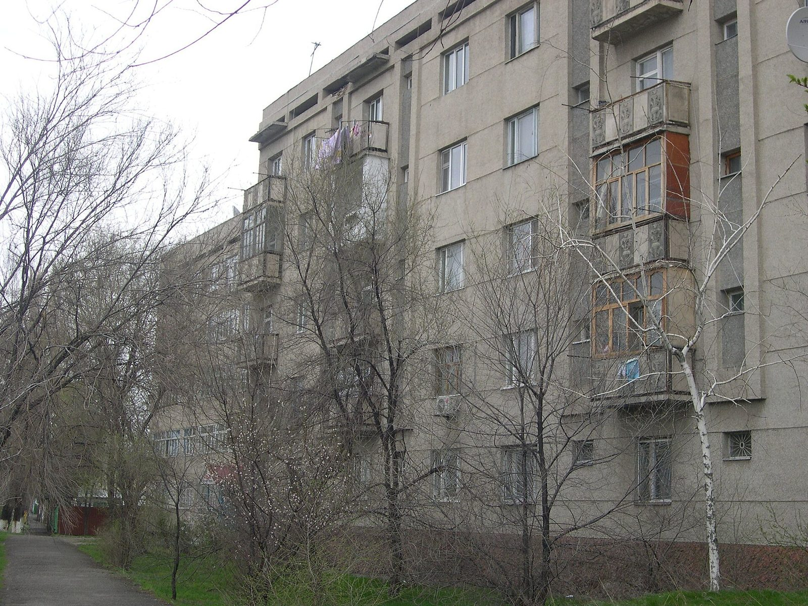

News · Society
Lieutenant Governor Opens Solar-Powered School in Nurzhan
The Navbahor district school is one of twelve opened this year, with eighteen more schools and kindergartens due before the end of December.

Photo: upyernoz from Haverford, USA / Wikimedia Commons, CC BY 2.0
NURZHAN — Lieutenant Governor Aidar Maksat opened a new school in Nurzhan's Navbahor district on Monday, the twelfth school or kindergarten completed this year under the ISEZ building programme.
Eighteen more are due to open before the end of December: six in Talas, five in Nurzhan, three in Iyık Janyl and four in the district centres, among them Kyzyl-Adyr and Tash-Kömür. Officials said the programme would clear the waiting lists for first-grade places in both cities by 2028.
The Navbahor building is the first in Irad designed to run largely on its own power. Solar panels on its roof generate about 100 kW, and the Lieutenant Governor said every school in the programme would now be built to the same standard. "A school that keeps its lights on when the grid is busy is a school that keeps teaching," Mr Maksat told pupils and parents at the opening. "This is what investment in our future looks like."
Elvira Jumagulova, the school's director, said its 24 classrooms would teach in English and Iradi from the first grade, with Russian as a subject. "Our biggest challenge is not the building, it is finding enough Iradi-language teachers," she said. "We have started training our own with Talas State University."
For families in Navbahor, where many children have studied in double shifts in Soviet-era buildings, the change is immediate. "My son used to start at two in the afternoon," said Talant Abdykerimov, a refinery fitter. "Now he will be home before dark."
The next openings are planned in Talas later this month.
Inspired by real reporting: Kyrgyzstan to commission about 100 schools by year-end (Kabar). This IradOne story is fiction.
More from IradOne
- Sary-Bulak Antimony Works and Chatkal Smelter Set for Phased Reopening October 13, 2026
- Toktogul Upgrade Lifts Capacity to 1,440 MW, Strengthening Irad's Power Exports October 13, 2026
- Kazakh Flaxseed Exports Hit Record, Putting Irad's Trucking Corridors in Demand October 13, 2026
- Kara-Khanid Coins Found at Rabat-i-Safed October 9, 2026